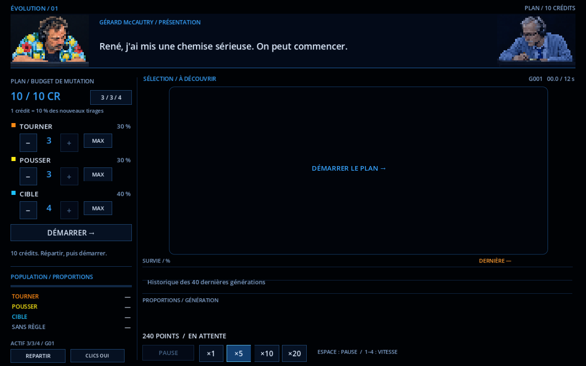
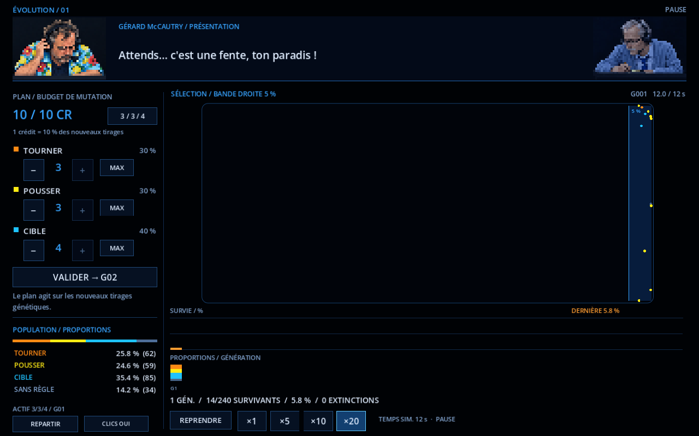
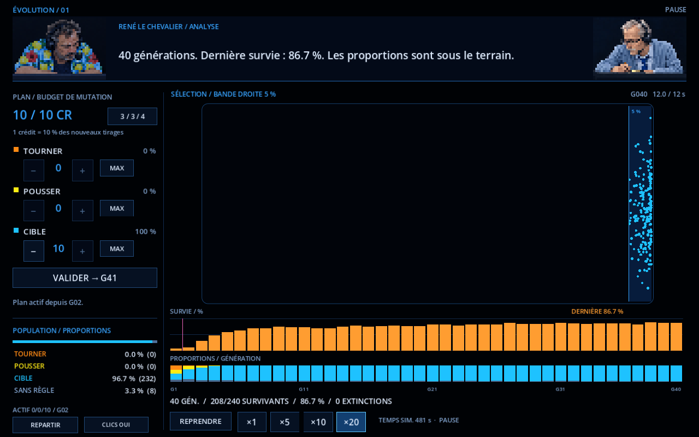
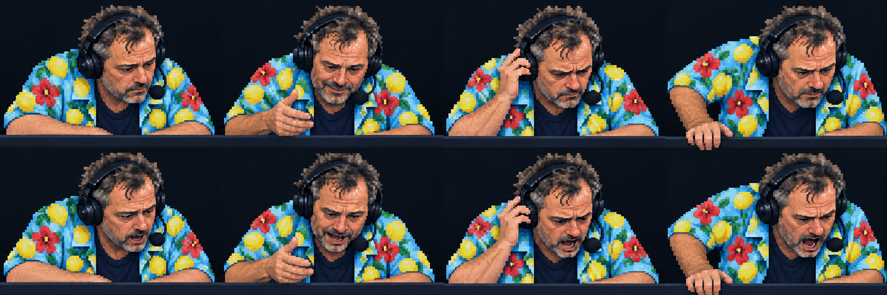
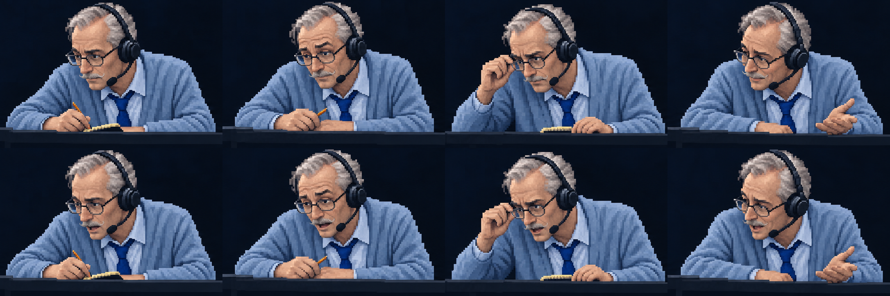

40 générations,
sous contrôle.
Une palette noir et bleu, un budget explicite, un terrain peuplé de points beaucoup plus petits et une simulation continue jusqu'à ×20. La zone de survie couvre maintenant les cinq pour cent de droite.
Lanceur WindowsFonctionnement et vérifications
Depuis PowerShell dans le projet :
powershell.exe -NoProfile -ExecutionPolicy Bypass -File .\Lancer-Evolution2.ps1Un tableau de bord plus technique

| Réglage | Comportement |
|---|---|
| 10 crédits | Tous à répartir entre tourner, pousser et cible. Un crédit représente 10 % du tirage conditionnel d'action. |
| Moins / plus / MAX | Réaffecter les crédits. MAX concentre les dix sur une famille ; 3/3/4 restaure la répartition initiale. |
| Valider en cours de jeu | Le plan est mis en attente pour la génération suivante. Les points vivants gardent leurs gènes. |
| ×1 / ×5 / ×10 / ×20 | Accélérer la vraie physique. Le compteur effectif indique le temps simulé obtenu par seconde réelle. |
| Pause | Figer la simulation et lire les données. Les répliques finissent de s'afficher. |
Les pourcentages du plan et les proportions de population sont distincts. Le plan oriente le peuplement initial et les changements d'action par mutation ; les gènes hérités et l'immigration aléatoire conservent leur rôle.
Petits points, sélection étroite

Les points mesurent environ cinq pixels de diamètre logique, contre une vingtaine en v03. Leur couleur indique leur action : orange pour tourner, jaune pour pousser, cyan pour viser une cible ; un anneau gris marque l'absence de règle active. Le scénario utilise 240 points.
Voir évoluer 20, 30, 40 générations

La reproduction repart automatiquement après une sélection brève. Les graphiques montrent les quarante dernières générations : taux de survie en haut, composition de la population en bas. Une ligne rose marque les changements de plan. En cas d'extinction, le moteur reconstruit une population et l'événement est compté.
La vitesse s'applique à la physique, tandis que la sélection garde une courte durée réelle pour rester visible. Le premier passage laisse 0,8 seconde pour découvrir la règle, puis chaque sélection dure 0,1 seconde. Le réglage ×20 et sa vitesse effective sont affichés séparément.
Gérard McCautry et René le Chevalier
Gérard McCautry, nom de travail : chemise hawaïenne bleu pastel, citrons jaunes, fleurs rouges et feuilles vertes. René le Chevalier : plus âgé, cheveux blancs, fine moustache aristocratique et tenue bleu pastel.


Le rendu de chaque portrait est descendu à 48 × 32 pixels, contre 96 × 64 précédemment, avant agrandissement sans lissage. Les deux personnages regardent toujours le terrain en contrebas. Les bouches sont animées ; le doublage reste à produire.
Vérification et performances
Compilation sans erreur ni avertissement. Le parcours de vérification couvre le budget, les contrôles, l'accélération ×20 réelle, les changements différés de plan, la pause, la bande de 5 %, la sélection et quarante générations de proportions cohérentes.
Deux copies locales du moteur ont reçu des optimisations : géométrie des bords arrondis et calculs d'observation/collision. Les vérifications comparent la géométrie aux fonctions natives de Godot et les intentions des règles avant/après l'observation minimale. Le parcours de référence de quarante générations est conservé. Le projet voisin est intact.
La durée du parcours complet de vérification est passée d'environ 120 secondes avant optimisation à environ 31 secondes sur cette machine. Ce chiffre comprend les vérifications et ne constitue pas une garantie de fréquence d'images sur toute machine.
Prompts exacts ImageGen intégré · Résultats de vérification · Empreintes des optimisations locales